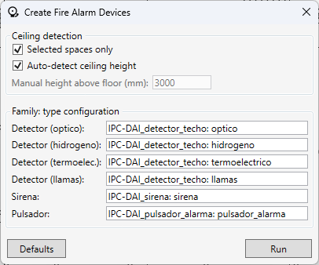

Create Security Devices — Colocación de dispositivos de Incendio, Intrusión y CCTV
Tabla de contenidos
El comando coloca automáticamente dispositivos de alarma contra incendios, sistemas de intrusión y videovigilancia (CCTV) en espacios MEP seleccionados: detectores de techo en una cuadrícula, dispositivos de pared (sirena, pulsador, sensores de intrusión) y cámaras (CCTV) en puertas y puntos estratégicos.
Qué hace el comando
- Determina el tipo de dispositivo por el nombre del espacio (ver la tabla de reglas)
- Calcula una cuadrícula óptima en el techo usando un radio de cobertura de 6300 mm
- Detecta la altura del techo automáticamente a partir de la geometría del modelo o utiliza un valor manual
- Coloca una sirena sobre la puerta para espacios de tipo Control y Celdas
- Coloca un pulsador, un sensor de intrusión y una cámara CCTV en cada puerta exterior
- Coloca cámaras CCTV en las esquinas del edificio (basado en líneas seleccionadas) y en postes existentes
- Omite dispositivos ya colocados por el comando (idempotencia)
- Genera un informe de texto con resultados detallados por tipo de familia
Preparación
- Las familias de dispositivos (detectores, sirena, pulsador) deben estar cargadas en el proyecto
- Muros, puertas y techos pueden estar en archivos vinculados — el comando soporta geometría vinculada
- Los nombres de los espacios deben contener las palabras clave indicadas en la tabla de reglas
Uso
- Seleccione uno o más espacios MEP (o desmarque Selected spaces only para procesar todos los espacios)
- Ejecute el comando — se abrirá el diálogo de configuración
- Opcionalmente ajuste los nombres de familia/tipo, los parámetros de altura y los subproyectos (Worksets)
- Pulse Run

Reglas de colocación
El tipo de dispositivo se determina por una subcadena en el nombre del espacio (sin distinguir mayúsculas/minúsculas):
| Palabra clave en el nombre | Techo | Pared |
|---|---|---|
| rectificador | hidrogeno + termoelectrico | — |
| transformador | llamas | — |
| bater | optico + hidrogeno | — |
| control | optico + hidrogeno | sirena sobre la puerta |
| celdas | optico + termoelectrico | sirena sobre la puerta |
| inversor | — | cámara en el centro |
| prot civil | — | central + expansor + teclado + bloque CCTV (suelo) |
| cabinas de mt | — | teclado + cámara en el centro |
| otros | optico | — |
| cualquier con puerta exterior | — | pulsador + sensor de intrusión + CCTV |
Configuración
Selected spaces only — procesar solo los espacios seleccionados.
Auto-detect ceiling height — la altura se obtiene lanzando un rayo hacia arriba desde cada punto de la cuadrícula (encuentra el techo o la cubierta más cercana, incluyendo archivos vinculados). Si está desactivado, la altura se toma del valor manual.
Manual height (mm) — altura sobre el suelo del espacio usada en modo manual. Activo solo cuando Auto-detect está apagado.
Family: type configuration — nombres de familia y tipo para cada dispositivo en formato FamilyName: TypeName. Defaults restablece valores por defecto.
Algoritmos
Detectores de techo
Para cada espacio, el comando construye una cuadrícula rectangular mínima N×M de modo que la semi-diagonal de la celda no exceda 6300 mm. El paso de la cuadrícula se redondea hacia abajo a 100 mm y el resto se distribuye simétricamente desde los muros. Si varios tipos de detectores son necesarios en el mismo punto de la cuadrícula, se separan a lo largo del eje X con paso de 500 mm.
La altura de cada punto se toma de la superficie de techo más cercana sobre él (intersección por rayo) o del valor manual.
Los espacios de forma compleja (área < 90% del rectángulo delimitador) se omiten y se listan en el informe.
Sirena sobre la puerta
La sirena se coloca sobre el centro del hueco de la puerta a 2500 mm por encima de la base de la puerta.
Pulsador en la puerta
Un pulsador se coloca en la pared junto a cada puerta exterior a 1400 mm de altura. El lado preferido es el de la manecilla; si no está disponible (puerta cercana o fin de muro), se usa el lado de las bisagras. La orientación mira hacia el interior del espacio.
Sensor volumétrico (Intrusión)
Se coloca en cada puerta exterior a 2400 mm sobre el suelo. El algoritmo intenta encontrar la mejor posición de visualización para la entrada:
- Prioridad de 2 metros: el sensor se coloca en la misma pared a 2 m de distancia del borde de la puerta y se gira 45° hacia la pared.
- Manejo de esquinas: si una esquina de la pared está a menos de 2 metros, el sensor se mueve a la pared adyacente (a 1 metro de la esquina) y se dirige perpendicular a ella.
- Emparejamiento inteligente: para cada puerta en la habitación, el algoritmo busca el dispositivo similar existente más cercano. Si ya existe un sensor (incluso si fue movido manualmente por el usuario), no se realiza una segunda colocación para esa puerta.
Videovigilancia (CCTV)
El comando soporta varios escenarios de colocación de CCTV:
- Sobre la puerta: En cada puerta exterior (200 mm sobre el hueco, 300 mm de desplazamiento desde la pared).
- En el centro del espacio: Para los tipos Inversor y Cabinas de MT (altura determinada automática o manualmente).
- En las esquinas del edificio: Si se seleccionan Detail Lines que representan los límites de los muros antes de ejecutar, se colocan cámaras en las esquinas externas (1 m de desplazamiento desde la esquina a lo largo de la bisectriz).
- En mástiles/postes: El comando encuentra instancias de mástiles (familia Pole especificada en la interfaz) y coloca cámaras en ellos a 5 m de altura.
Salida
Al finalizar, el comando muestra un informe:
- Recuento de dispositivos colocados por familia/tipo
- Recuento de puntos omitidos (ya ocupados) con detalles por tipo (tipos de familia e IDs de elementos existentes)
- Lista de espacios de forma compleja omitidos para colocación en techo
Limitaciones
- Los espacios de forma compleja no se procesan para colocación en techo — coloque dispositivos manualmente
- La orientación de la familia asume que el frente de la instancia mira hacia -Y en la orientación base de la familia